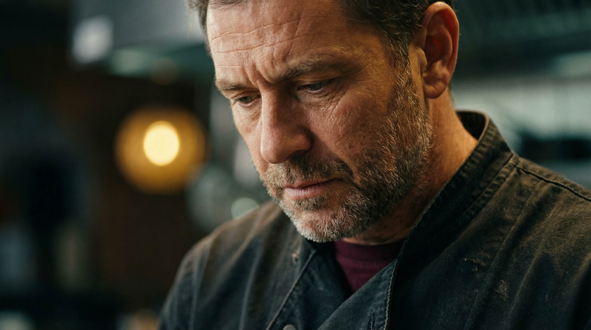

Çözümler
İş Dönüşümü
İçin Tasarlanmış
Çözümler.
Kalite ile ölçek arasındaki dengeyi ortadan kaldırıyoruz. Çözmeniz gereken zorluğu veya ölçeklendirmeniz gereken zanaatı seçin.
Zanaat'a Göre Çözümler
Alanları
Seçin.
Stüdyo Kalitesi + AI Gücü = Sınırsız Görsel
AI ile Ürün
Fotoğrafı
Üretimi
Fotoğrafı
Üretimi
Ürünlerinizin fotoğraflarını profesyonel stüdyomuzda çekiyoruz; Adon Studio'nun AI destekli fotoğraf işleme süreciyle ham çekimler, kısa sürede campaign-ready görsellere dönüşüyor. Işık optimizasyonu, renk tutarlılığı, sahne kompozisyonu hepsi tek iş akışında.
Prodüksiyon maliyeti düşük. Etki, çok büyük.
AI ile Profesyonel
Video
Üretimi
Video
Üretimi
Adon Studio, endüstrinin en güçlü AI video platformlarını orkestra gibi yöneterek markanıza özel sinematik içerik üretiyor. Gerçek çekim gerektirmeyen, ama gerçek prodüksiyon kalitesinde videolar.
İki Dünyanın En İyisi. Tek Filmde.
Hibrit
Prodüksiyon
Gerçek + AI
Prodüksiyon
Gerçek + AI
Bazen gerçek bir yüz, sahici bir el ya da somut bir mekân gerekir. Bazen de hayal gücünün sınırları zorlanmalıdır. Adon Studio'nun hibrit prodüksiyon modeli, gerçek çekim ve AI üretimini tek bir anlatıda birleştiriyor; bütçenizi optimize ederken yaratıcılığınızı kısıtlamıyor.
Profesyonel Müzisyenler + AI = Markaya Özel Ses Kimliği
AI Destekli
Müzik &
Jingle Üretimi
Müzik &
Jingle Üretimi
Müzik, reklamın hafızasıdır. Adon Studio, gerçek müzisyenler ve profesyonel enstrüman kayıtlarını AI kompozisyon teknolojisiyle birleştirerek markanıza özgün müzik ve jingle üretiyor.
Hedefe Göre Çözümler
Ne Elde
Etmelisiniz?
01
Büyüme Pazarlamacıları İçin
Hız & Ölçek
Kaliteden ödün vermeden birden fazla pazarda 48 saat içinde 50 reklam varyantı test etmesi gereken
büyüme pazarlamacısı için. Sitemiz birden fazla yapay zeka modelini eşzamanlı olarak orkestralayarak
inanılmaz hacimde içerik üretir.
02
Kurumsal Liderler İçin
Titizlik & Tutarlılık
Garantili, katı marka uyumu ile ölçeklenebilir dahili iletişim ve eğitime ihtiyaç duyan kurumsal
lider için. Marka standartları tüm platformlarda ve dillerde otomatik olarak uygulanır.
03
Yenilikçiler İçin
Yaratıcı Atılım
Pahalı prodüksiyona geçmeden önce cesur konseptleri test etmek, imkânsızı görselleştirmek ve
yaratıcı fikirleri doğrulamak isteyen yenilikçiler için. Fikir ile gerçekleştirme arasındaki
sürtüşme ortadan kalkar.
Neden ADON
Sadece
Operatör
Değil,
Sonuç
Satıyoruz.
Piyasa, stratejik titizlik veya estetik ustalıktan yoksun yapay zeka "fabrikalarıyla" dolup taşmaktadır. Biz evrimleşmiş bir stüdyoyuz. Üst düzey prodüksiyon uzmanlığımızın mirasını özel bir yapay zeka orkestrasyon sistemiyle sentezliyoruz.
Çözümünüzü Keşfedin →
DÖNÜŞÜM, İŞLEM DEĞİL
KALİTEDEN ÖDÜN YOK
TASARIMLA ÖLÇEKLENİR
PERFORMANS ODAKLI
KÜRESEL ERİŞİM, YEREL ÖZGÜNLÜK
MARKA BÜTÜNLÜĞÜ GÜVENDE
LOJİSTİK ORTADAN KALKTI
DÖNÜŞÜM, İŞLEM DEĞİL
KALİTEDEN ÖDÜN YOK
TASARIMLA ÖLÇEKLENİR
PERFORMANS ODAKLI
KÜRESEL ERİŞİM, YEREL ÖZGÜNLÜK
MARKA BÜTÜNLÜĞÜ GÜVENDE
LOJİSTİK ORTADAN KALKTI